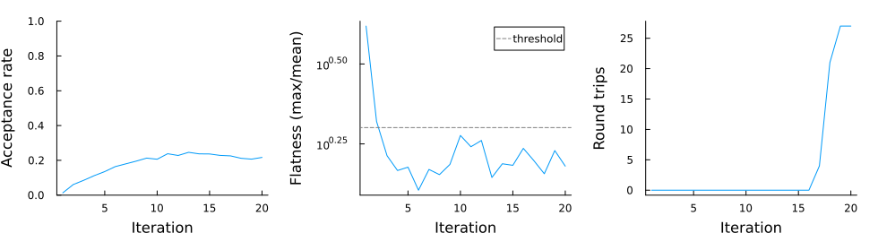
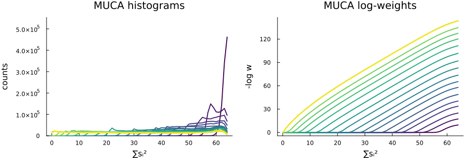

Multicanonical Sampling of the Blume-Capel Model
Illustration of multicanonical sampling in only part of the Hamiltonian. Specifically, the Hamiltonian of the Blume-Capel model reads
\[ H = -J\sum_{ij}s_i s_j + \Delta\sum_i s_i^2\]
The spin-spin interaction remains in the canonical (Boltzmann) ensemble while we construct a multicanonical ensemble for the crystal-field term. Depending on the temperature, a change in $\Delta$ induces no transition, a second-order, or a first-order phase transition.
using Random, StatsBase
using MonteCarloX, MCXSpins
using Plots, ProgressMeter
import MonteCarloX: update!CI parameters
const CI_MODE = get(ENV, "MCX_SMOKE", get(ENV, "MCX_CI", "false")) == "true"
num_iter = CI_MODE ? 3 : 20
thermalization_steps = CI_MODE ? 100 : 10_000
recording_steps = CI_MODE ? 1_000 : 1_000_000;Parameters
L = 8
T = 0.9
sys = BlumeCapel([L, L]);Custom ensemble
We combine a Boltzmann weight for the pairwise interaction with a multicanonical weight for the crystal-field term $\sum_i s_i^2$. The CustomEnsemble routes each contribution to the appropriate ensemble.
mutable struct CustomEnsemble <: AbstractEnsemble
pair :: BoltzmannEnsemble
spin2 :: MulticanonicalEnsemble
record_visits :: Bool
end
@inline function MonteCarloX.logweight(lw::CustomEnsemble, H::Tuple{<:Real,<:Real})
return MonteCarloX.logweight(lw.pair, H[1]) + MonteCarloX.logweight(lw.spin2, H[2])
end
@inline MonteCarloX.should_record_visit(lw::CustomEnsemble) = lw.record_visits
@inline function MonteCarloX.record_visit!(lw::CustomEnsemble, H_vis::Tuple{<:Real,<:Real})
MonteCarloX.record_visit!(lw.spin2, H_vis[2])
return nothing
end
@inline function reset_histogram!(lw::CustomEnsemble)
fill!(lw.spin2.histogram.values, zero(eltype(lw.spin2.histogram.values)))
return nothing
end
@inline reset_histogram!(alg::AbstractImportanceSampling) =
reset_histogram!(MonteCarloX.ensemble(alg))
ens = CustomEnsemble(
BoltzmannEnsemble(T=T),
MulticanonicalEnsemble(0:1:length(sys.spins)),
true,
);Spin flip
We implement a custom spin_flip! for the Blume-Capel model that evaluates the two-component observable $(J\sum s_i s_j,\, \sum s_i^2)$ and passes it to accept! as a tuple — the CustomEnsemble routes each component to the correct acceptance weight.
function spin_flip!(sys::MCXSpins.AbstractBlumeCapel, alg::AbstractImportanceSampling)
i = pick_site(alg.rng, length(sys.spins))
s_new = propose_state(alg.rng, sys, i)
dsys = MCXSpins.delta_sys(sys, i, s_new)
H_old = (sys.cached_pair, sys.cached_spin2)
H_new = (H_old[1] + dsys.delta_spin * dsys.coupling, H_old[2] + dsys.delta_spin2)
accept!(alg, H_new, H_old) && modify!(sys, i, dsys)
return nothing
endspin_flip! (generic function with 1 method)Multicanonical iteration
Each iteration thermalizes, records histogram, and updates weights. We use the recursive update (Berg, 1996; Janke, 1998) which accumulates statistics across iterations for more stable convergence than the trivial W -= log(H) rule. We also monitor flatness and track round trips.
rng = Xoshiro(42)
alg = ImportanceSampling(rng, ens)
N_sites = length(sys.spins)
s2_min = 0
s2_max = N_sites
rt = Roundtrips(s2_min + 0.01 * N_sites, s2_max - 0.01 * N_sites)
histograms = Vector{typeof(ensemble(alg).spin2.histogram)}()
logweights = Vector{typeof(ensemble(alg).spin2.logweight)}()
acceptrate = Float64[]
flatness_log = Float64[]
roundtrip_log = Int[]
@showprogress 1 "Iterating MUCA..." for iter in 1:num_iter
# thermalization
for _ in 1:thermalization_steps; spin_flip!(sys, alg); end
# recording
reset!(alg)
reset_histogram!(alg)
reset!(rt)
for _ in 1:recording_steps
spin_flip!(sys, alg)
update!(rt, sys.cached_spin2)
end
# update weights with recursive scheme
muca_ens = ensemble(alg).spin2
update!(muca_ens; mode=:recursive)
# smooth weights to reduce noise
smooth!(muca_ens, (s2_min, s2_max); window=3)
# log diagnostics
push!(histograms, deepcopy(muca_ens.histogram))
push!(logweights, deepcopy(muca_ens.logweight))
push!(acceptrate, acceptance_rate(alg))
push!(flatness_log, flatness(muca_ens.histogram, s2_min, s2_max))
push!(roundtrip_log, rt.count)
end┌ Warning: Overwriting d_logweight where recursive precision has been accumulated. This discards converged weight estimates.
└ @ MonteCarloX ~/work/MonteCarloX.jl/MonteCarloX.jl/src/ensembles/multicanonical.jl:118
┌ Warning: Overwriting d_logweight where recursive precision has been accumulated. This discards converged weight estimates.
└ @ MonteCarloX ~/work/MonteCarloX.jl/MonteCarloX.jl/src/ensembles/multicanonical.jl:118
Iterating MUCA... 10%|███▍ | ETA: 0:00:44┌ Warning: Overwriting d_logweight where recursive precision has been accumulated. This discards converged weight estimates.
└ @ MonteCarloX ~/work/MonteCarloX.jl/MonteCarloX.jl/src/ensembles/multicanonical.jl:118
Iterating MUCA... 15%|█████▏ | ETA: 0:00:37┌ Warning: Overwriting d_logweight where recursive precision has been accumulated. This discards converged weight estimates.
└ @ MonteCarloX ~/work/MonteCarloX.jl/MonteCarloX.jl/src/ensembles/multicanonical.jl:118
Iterating MUCA... 20%|██████▊ | ETA: 0:00:33┌ Warning: Overwriting d_logweight where recursive precision has been accumulated. This discards converged weight estimates.
└ @ MonteCarloX ~/work/MonteCarloX.jl/MonteCarloX.jl/src/ensembles/multicanonical.jl:118
Iterating MUCA... 25%|████████▌ | ETA: 0:00:29┌ Warning: Overwriting d_logweight where recursive precision has been accumulated. This discards converged weight estimates.
└ @ MonteCarloX ~/work/MonteCarloX.jl/MonteCarloX.jl/src/ensembles/multicanonical.jl:118
Iterating MUCA... 30%|██████████▎ | ETA: 0:00:26┌ Warning: Overwriting d_logweight where recursive precision has been accumulated. This discards converged weight estimates.
└ @ MonteCarloX ~/work/MonteCarloX.jl/MonteCarloX.jl/src/ensembles/multicanonical.jl:118
Iterating MUCA... 35%|███████████▉ | ETA: 0:00:24┌ Warning: Overwriting d_logweight where recursive precision has been accumulated. This discards converged weight estimates.
└ @ MonteCarloX ~/work/MonteCarloX.jl/MonteCarloX.jl/src/ensembles/multicanonical.jl:118
Iterating MUCA... 40%|█████████████▋ | ETA: 0:00:22┌ Warning: Overwriting d_logweight where recursive precision has been accumulated. This discards converged weight estimates.
└ @ MonteCarloX ~/work/MonteCarloX.jl/MonteCarloX.jl/src/ensembles/multicanonical.jl:118
Iterating MUCA... 45%|███████████████▎ | ETA: 0:00:20┌ Warning: Overwriting d_logweight where recursive precision has been accumulated. This discards converged weight estimates.
└ @ MonteCarloX ~/work/MonteCarloX.jl/MonteCarloX.jl/src/ensembles/multicanonical.jl:118
Iterating MUCA... 50%|█████████████████ | ETA: 0:00:18┌ Warning: Overwriting d_logweight where recursive precision has been accumulated. This discards converged weight estimates.
└ @ MonteCarloX ~/work/MonteCarloX.jl/MonteCarloX.jl/src/ensembles/multicanonical.jl:118
Iterating MUCA... 55%|██████████████████▊ | ETA: 0:00:16┌ Warning: Overwriting d_logweight where recursive precision has been accumulated. This discards converged weight estimates.
└ @ MonteCarloX ~/work/MonteCarloX.jl/MonteCarloX.jl/src/ensembles/multicanonical.jl:118
Iterating MUCA... 60%|████████████████████▍ | ETA: 0:00:14┌ Warning: Overwriting d_logweight where recursive precision has been accumulated. This discards converged weight estimates.
└ @ MonteCarloX ~/work/MonteCarloX.jl/MonteCarloX.jl/src/ensembles/multicanonical.jl:118
Iterating MUCA... 65%|██████████████████████▏ | ETA: 0:00:12┌ Warning: Overwriting d_logweight where recursive precision has been accumulated. This discards converged weight estimates.
└ @ MonteCarloX ~/work/MonteCarloX.jl/MonteCarloX.jl/src/ensembles/multicanonical.jl:118
Iterating MUCA... 70%|███████████████████████▊ | ETA: 0:00:10┌ Warning: Overwriting d_logweight where recursive precision has been accumulated. This discards converged weight estimates.
└ @ MonteCarloX ~/work/MonteCarloX.jl/MonteCarloX.jl/src/ensembles/multicanonical.jl:118
Iterating MUCA... 75%|█████████████████████████▌ | ETA: 0:00:08┌ Warning: Overwriting d_logweight where recursive precision has been accumulated. This discards converged weight estimates.
└ @ MonteCarloX ~/work/MonteCarloX.jl/MonteCarloX.jl/src/ensembles/multicanonical.jl:118
Iterating MUCA... 80%|███████████████████████████▎ | ETA: 0:00:07┌ Warning: Overwriting d_logweight where recursive precision has been accumulated. This discards converged weight estimates.
└ @ MonteCarloX ~/work/MonteCarloX.jl/MonteCarloX.jl/src/ensembles/multicanonical.jl:118
Iterating MUCA... 85%|████████████████████████████▉ | ETA: 0:00:05┌ Warning: Overwriting d_logweight where recursive precision has been accumulated. This discards converged weight estimates.
└ @ MonteCarloX ~/work/MonteCarloX.jl/MonteCarloX.jl/src/ensembles/multicanonical.jl:118
Iterating MUCA... 90%|██████████████████████████████▋ | ETA: 0:00:03┌ Warning: Overwriting d_logweight where recursive precision has been accumulated. This discards converged weight estimates.
└ @ MonteCarloX ~/work/MonteCarloX.jl/MonteCarloX.jl/src/ensembles/multicanonical.jl:118
Iterating MUCA... 95%|████████████████████████████████▎ | ETA: 0:00:02┌ Warning: Overwriting d_logweight where recursive precision has been accumulated. This discards converged weight estimates.
└ @ MonteCarloX ~/work/MonteCarloX.jl/MonteCarloX.jl/src/ensembles/multicanonical.jl:118
Iterating MUCA... 100%|██████████████████████████████████| Time: 0:00:33Convergence
We track acceptance rate, histogram flatness (1.0 = perfect), and round trips through the observable range.
p1 = plot(acceptrate; xlabel="Iteration", ylabel="Acceptance rate",
label=nothing, ylims=(0,1))
p2 = plot(flatness_log; xlabel="Iteration", ylabel="Flatness (max/mean)",
label=nothing, yscale=:log10)
hline!(p2, [2.0]; ls=:dash, color=:gray, label="threshold")
p3 = plot(roundtrip_log; xlabel="Iteration", ylabel="Round trips",
label=nothing)
plot(p1, p2, p3; layout=(1,3), size=(980, 260), margin=4Plots.mm)
Histograms and log-weights
Each iteration refines the estimated log-DOS for $\sum_i s_i^2$. Converged iterations should show a flat histogram and a smooth log-weight.
function plot_histograms_and_logweights(xlabel, hist_vec, lw_vec; title_prefix="")
n = length(hist_vec)
cols = palette(:viridis, max(n, 2))[1:n]
xs = get_centers(hist_vec[1])
i0 = 1
p1 = plot(xs, hist_vec[1].values; lw=2, color=cols[1],
xlabel=xlabel, ylabel="counts",
title="$(title_prefix) histograms", legend=false,
ylims=(0, maximum(hist_vec[1].values) * 1.2))
for i in 2:n
plot!(p1, xs, hist_vec[i].values; lw=2, color=cols[i])
end
p2 = plot(xlabel=xlabel, ylabel="-log w",
title="$(title_prefix) log-weights", legend=false)
for i in 1:n
plot!(p2, xs, -lw_vec[i].values .+ lw_vec[i].values[i0]; lw=2, color=cols[i])
end
return plot(p1, p2; layout=(@layout([a b])), size=(960, 320), margin=4Plots.mm)
end
plot_histograms_and_logweights("∑sᵢ²", histograms, logweights; title_prefix="MUCA")
This page was generated using Literate.jl.